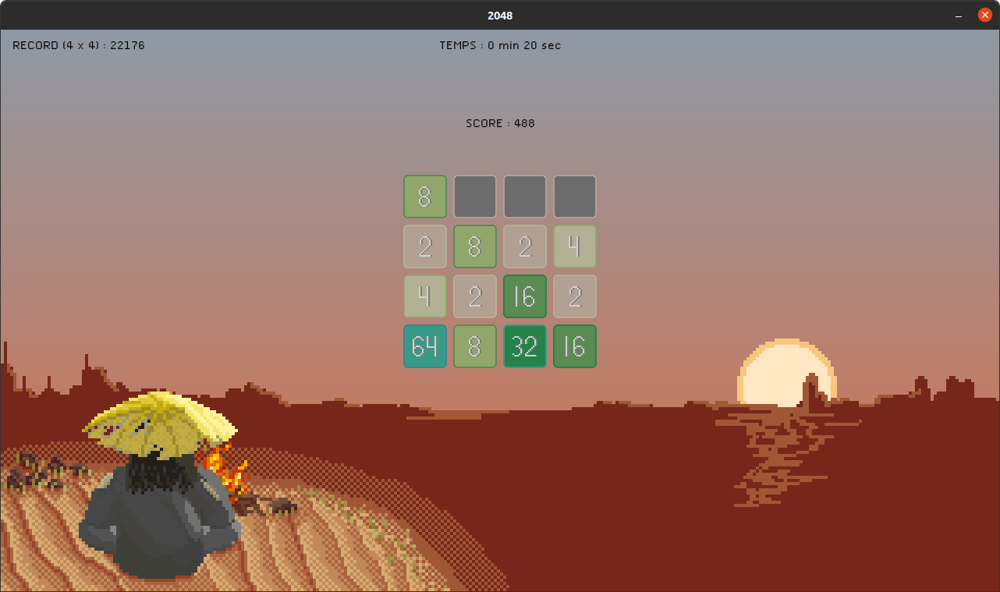

Peaceful 2048
Table of Contents
1. Introduction

Figure 1: Capture d'écran du jeu
1.1. Mode d'emploi
Nous avons réalisé un 2048 jouable en console et en interface graphique. Le choix du mode de jeu se fait dans le terminal après le lancement du programme. Si vous choisissez la version graphique, vous pouvez également choisir la taille de la grille (3*3, 4*4, 5*5).
Pour la version console les déplacements sont expliqués dans le terminal. Et dans la version graphique, vous pouvez vous déplacer avec les flèches du clavier et revenir d'une grille en arrière avec la touche 'a'.
De plus, vous disposez d'un menu en faisant "Echap". Dedans, vous avez la possibilité de :
- relancer une nouvelle partie ;
- de sauvegarder la grille actuelle (choix aussi possible à chaque fermeture du programme) ;
- de charger une partie précédemment sauvegardée ;
- afficher les contrôles disponibles pour le jeu ;
- de quitter le jeu (possible également avec la croix rouge classique) ;
Également, la version en console est un prototype, réalisé avant la SDL. Il ne dispose pas de structure, la taille est modifiable en dur (#define N x : avec x ma taille de la grille) et il n'est pas optimisé contrairement à la SDL. Néanmoins, il n'y a pas de temps de calcul gênant l'utilisation (seulement un petit temps de chargement au début avec la fonction "sleep" pour afficher les règles).
1.2. Disposition des fichiers
Vous avez à votre disposition dans le fichier compressé :
- un répertoire "code" contenant l'ensemble de nos codes et de nos en-têtes (console et SDL),
- un répertoire "data" contenant les caractéristiques des maps (choix des blocs, tailles…) et les meilleurs scores suivant la taille de grille choisie,
- un répertoire "fonts" contenant la police d'écriture pour TTF,
- un répertoire "graphics" contenant l'image en background et les images des blocs (images créées pour le jeu),
- un répertoire "music" contenant la musique du fond et le son pour chaque déplacement (musiques créées aussi pour le jeu)
- une version de notre jeu déjà compilé,
- un Makefile permettant de recompiler notre projet,
- un fichier "save.txt" permettant la sauvegarde d'une unique partie.
Pour une meilleure correction, nous avons fait le choix de rendre ces dossiers/fichiers visibles.
2. Ressources
Voici les ressources utilisées dans notre projet.
Attention : des bibliothèques sont à installer pour faire fonctionner notre programme. Il s'agit de bibliothèque appartenant à la SDL 1.2
2.1. Bibliothèques
2.1.1. Standard
Liste des bibliothèques utilisées :
stdio.hstdlib.hsys/stat.htime.hstring.h
2.1.2. SDL 1.2
Liste des bibliothèques utilisées :
SDL/SDL.hSDL/SDL_image.hSDL/SDL_ttf.hSDL/SDL_mixer.h
2.2. Musiques
Le thème principal a été composé par Enzo Durel qui se réserve tous les droits liés à son utilisation. Le logiciel utilisé a été FL-Studio 20.
Les sons d'introduction et de déplacements ont été choisi sur FreeSound et sont libres de droits.
2.3. Images
Toute la charte graphique a été créée par Enzo Durel qui se réverse tout les droits liés à son utilisation. Les logiciels utlisés ont été Photoshop et Krita.
2.4. Fonts
La police a été choisie sur DaFont et est une police libre de droits.
3. Modélisation
Dans cette partie nous expliquerons le fonctionnement du code.
Notre implémentation du code en SDL se base sur le concept de Tile Mapping, un concept très répandu et utilisé dans les années 90 dans le jeu vidéo 2D.
3.1. Structures
Disponible à projet2048/code/headers/struct.h.
3.1.1. Map
La structure Map correspond au plateau de jeu du 2048. Elle est composée :
- D'un
schema(char **) (tableau de caractères 2D) représentant le plateau de jeu du 2048 - D'une largeur
w(int) (largeur du schéma) - D'une hauteur
h(int) (hauteur du schéma) - D'un
score(int) (score actuel de la partie correspondant à la partie en cours) - D'un
Tileset(Tileset *) (ressources graphiques des cases)
3.1.2. Tileset
La structure Tileset est la représentation en code d'une image contenant plusieurs
tiles (= représentation graphique d'un élément), par exemple ici, chaque nombre du
2048 (0, 2, 4, 8, 16, …).
La structure est composée :
- D'une largeur
w(int) (nombre de tiles représentées et découpées en colonnes) - D'une hauteur
h(int) (nombre de tiles représentées et découpées en lignes) - D'une résolution
res(int) (32 px, 64 px, …) (elle sera calculée par largeurdelimage/largeurdutileset) - D'une image
im(SDL_Surface *) - Et d'un tableau de propriétés de tiles
props(TileProp *)
3.1.3. TileProp
TileProp est une structure de propriétés de chaque tile.
Ici les tiles sont caractérisées par :
- Une dimension
R(SDL_Rect) (les coordonnées dans le tileset ainsi qu'une largeur et hauteur) - Une collision
plein(int) (si le tile en question est "plein" ou "vide") - Une valeur associées
value(int) (tile0 = 0, tile1 = 2, tile2 = 4, …) représentant les puissances de 2 du jeu
3.2. Fonctions principales
Le code présente de nombreuses fonctions mais attardons nous sur celles qui semblent intéressantes :
3.2.1. Mouvements
Disponible à projet2048/code/src/move.c.
Le mouvement du plateau de jeu est basé sur deux principes : un unique déplacement et la rotation du plateau.
- Droit
void droit(Map * m);
L'unique déplacement ici est sur le coup
droit(de gauche à droite). Il aurait pu être basé sur n'importe quel autre mouvement.Le plateau de jeu représenté étant un tableau 2D de caractères nous avons défini les cases vides comme étant les
0. Le déplacement se fait donc en 3 phases :- On "comble" les
0, c'est-à-dire on range les cases le plus à droite possible sans comparaison de valeurs - On "fusionne" les cases : On ajoute les cases adjacentes avec les valeurs équivalentes en commençant par la case la plus à droite (en regardant les cases à droite de celle-ci). Cet ordre est défini par le jeu du 2048, si des cases sont équivalentes, celles dans la direction donnée fusionnent en premières.
- On "recomble" les
0pour enlevés les espaces crées lors de la phase de fusion.
- On "comble" les
- Rotation
void rota_droite(char ** schema, int n);
Maintenant que nous avons conçu notre déplacement pour une direction, j'imagine qu'il paraît évident et facile de faire les autres… et bien nous n'allons pas le faire.
En effet, par la suite chaque mouvement sera fait par le mouvement droit mais le tableau fera des rotations.
Pour m'expliquer, le mouvement haut est un mouvement droit pour le tableau droit tourné à 90° dans le sene anti-horaire. Et de même pour les autres deplacements.
Ici, nous s'utiliserons seulement la rotation à
90°dans le sens horaire.La rotation se fait en 2 étapes :
- Transformation des lignes en colonnes (transposée).
- Inversions des colonnes.
Cette façon est donc élégante mais plus lente que le déplacement rectiligne. Mais dans le contexte du 2048, nous pensons que cela ne se ressent pas même sur une machine avec très peu de ressources.
3.2.2. Win & Lose
Disponible à projet2048/code/src/game_over.c.
int win(Map * m); int lose(Map * m);
Les fonctions des Victoire et de Défaite sont de simples parcours de tableau :
- Pour la fonction
win:- Parcours du tableau : s'il y a un 2048 : le joueur gagne (le droit de continuer)
- Pour la fonction
lose:- Parcours du tableau et on regarde si chaque case n'est pas fusionnable avec celle qui se situe relativement à celle-ci : en bas, et à droite. Si une case est vide bien sur le joueur ne perd pas.
3.2.3. Menu
Disponible à projet2048/code/src/menu.c.
Passons maintenant à une fonction qui n'est pas essentielle au 2048 mais utile dans le confort du joueur : le Menu.
Nous avons créé un menu "dynamique" :
int menu(SDL_Surface * screen, char * str, int transitions);
Il comporte toujours la même disposition, supporte jusqu'à 10 options maximum (choix de notre part, car 10 options sur un menu c'est déjà trop…). Chaque titre de menu et chaque option peuvent être entièrement personnalisable.
Fonctionnement :
Le menu ne comporte que 3 paramètres :
SDL-Surface * screencorrespondant à l'écran de blittage.char * strcorrespondant à une phrase où sont listés, en premier : le titre, ensuite les options : option 1, option 2 … Chaque option est séparée par un|. Exemple : "Menu|Nouvelle Partie|Charger|Quitter"un entier
transitionscorrespondant à l'effet de fondu souhaité :1pour un fondu en entrée dans le menu-1pour un fondu en sortie de menu2pour les 2 fondus0pour aucun fondu.
Côté SDL, chaque option est incrémentée d'une SDLSurface et est modélisé par une police. En s'aidant des flèches directionnelles, l'option se choisit tout en limitant au choix minimum
1jusqu'à l'optionn.La fonction retourne un entier correpondants à l'option choisie (sans compter le titre) :
1pour l'option 1,2pour l'option 2, …Nous avons donc juste à traiter l'option choisie dans un
switch.Grâce à cette unique fonction, nous avons créé tous les menus du jeu.
3.2.4. Scores
Disponible à projet2048/code/src/score.c.
- Score En Cours
Nous utilisons deux fonctions concernant le score de la partie :
int score_load(SDL_Surface * screen, SDL_Surface * bg, unsigned long int score);
ScoreLoadqui étant donné un score en paramètre l'affiche sur l'écran. Elle prend 3 paramètres :SDL_Surface * screenl'écran principal.SDL_Surface * bgl'image de fond (background).unsigned long int scorele score à afficher.
La fonction charge une police avec
SDL_ttfsur uneSDL_Surface. On calcule sa taille, on crée en conséquence unSDL_Rectde la même taille que le texte et à la position souhaitée. On coupe l'image de fondbgen sélectionnant l'endroit avec leSDL_Rectcrée précédemment puis ont le blit sur l'écran et on blit le score.int score_delete(SDL_Surface * screen, SDL_Surface * bg, unsigned long int score);
ScoreDeleteefface l'affichage actuel quand on remet à zéro. ScoreLoad ne pose aucun problème d'affichage lors d'une partie car le score est une fonction croissante donc un affichage toujours plus grand. Or quand on remet à 0, on doit effacer un score car l'affichage avec 0 est forcément plus petit que le score de la partie précédente.La fonction est aussi utilisée lorsque le joueur revient au coup d'avant.
- Score Max
Nous utilisons deux fonctions pour gérer le score maximum d'un joueur :
int score_max_save(int mdj, unsigned long int score);
score_max_savequi enregistre le score maximum dans le fichier correspondant. Elle prend 2 paramètres :int mdjcorrespondant au mode de jeu en cours (3*3, 4*4, 5*5).unsigned long int scorecorrespondant au score en cours.
La fonction ouvre le fichier
scoreX.txtoù X correspond au mode de jeu (3, 4, 5, …). Elle compare le score écrit dans le fichier au score passé en paramètre, si le score est plus grand alors il remplace le score du fichier.int score_max_load(SDL_Surface * screen, SDL_Surface * bg, int mdj);
score_max_loadqui affiche le score max à l'écran. Même fonctionnement d'affichage quescore_load
3.2.5. Chronomètre
Disponible à projet2048/code/src/time.c.
Nous utilisons une unique fonction pour la gestion du temps.
La gestion du temps n'est pas poussée dans ce jeu, nous affichons juste le temps depuis le commencement de la partie. Le temps n'est pas sauvegardé.
int chrono(SDL_Surface * screen, SDL_Surface * bg, unsigned long int time_begin);
chrono affiche le temps écoulé depuis le lancement du programme, mais elle peut
aussi afficher le temps relatif à une partie. Elle a 3 paramètres :
SDL_Surface * screenl'écran principalSDL_Surface * bgl'image de fondunsigned long int time_beginle temps de début relatifs
On utilise ici SDL_GetTicks() et on calcul les minutes avec le rapport ((SDL_GetTicks()-time_begin) / 60000)
et les scondes avec (((SDL_GetTicks()-time_begin) % 60000 )/ 1000)
L'affichage se fait comme pour l'affichages des scores.
Pour afficher le temps en continue nous utilisons un SDL_PollEvent au lieu de
SDL_WaitEvent car ce dernier met en veille le programme donc n'actualise pas
l'affichage. Pour gérer le surplus de CPU de SDL_PollEvent nous endormons le
programme tant que 30ms ne sont pas passées et qu'aucune touche n'est pressée.
Nous appelons donc chrono lors du processus d'endormissement, il fonctionne en parallèle.
3.2.6. Sauvegarde
Disponible à projet2048/code/src/save.c.
La sauvegarde n'est pas très avancée : nous pouvons ne charger qu'une unique sauvegarde. De plus, si le mode de jeu en cours n'est pas compatible avec la sauvegarde que l'on veut charger, alors un message d'erreur apparaît pour informer le joueur.
Nous utilisons deux fonctions pour gérer la sauvegarde :
int sauv(Map * m, char * name, int mdj);
sauv qui sauvegarde la partie : elle écrit dans le fichier save.txt le mode de jeu
sous la forme #sauv X où X est le mode de jeu (3, 4, 5, …), écrit le tableau de
caractères dans le fichier et écrit le score correspondant.
int charge_sauv(Map * m, char * name, int mdj);
charge_sauv qui récupère la sauvegarde, gère si le mode de jeu est compatible, si
oui, actualise le schéma du plateau de jeu ainsi que le score.
3.2.7. Musique
Disponible à projet2048/code/src/music.c.
Nous gérons la musique avec 3 fonctions :
Mix_Music * music_load(char * name);
music_load qui charge une musique destinée à être jouée en boucle.
Mix_Chunk * chunk_load(char * name, int level);
chunk_load qui charge un son court : ici le son de mouvement.
void play_chunk(Mix_Chunk * son);
play_chunk qui joue le son court.
La gestion se fait avec SDL_Mixer et ses fonctions.
4. Améliorations potentielles
4.1. Déplacement et Rotation
Chaque fois que nous faisons un déplacement (sauf à droite), nous faisant 4 rotations. Effectivement on a :
- \(x\) appelle à
rota_droitepuisdroitafin de faire le coup. - \(4-x\) appelle à
rota_droitepour la remettre dans le bon sens.
Nous pouvons faire une fonction rota_droite et rota_gauche pour limiter l'appelle à
la fonction rota_droite et donc gagner en complexité de calcul et temporel.
4.2. Chronomètre
Nous pouvons ajouter le fait d'enregistrer le chronomètre dans un fichier en même temps que la grille. Comme ça si le joueur souhaite relancer sa partie, il peut recupérer son ancien temps.
Et donc également faire un enregistrement du meilleur temps (comme pour le meilleur score).
Il serait intéressant de pouvoir afficher le nombre d'heures quand le programme a été lancé depuis plus de 60 min.
4.3. Fonctionnalitées dans le menu
On peut rajouter la possibilité de connaître le nombre d'heures jouer depuis l'installation du programme.
Et aussi la possibilité de configurer soit même ces touches (et gérer les conflits).